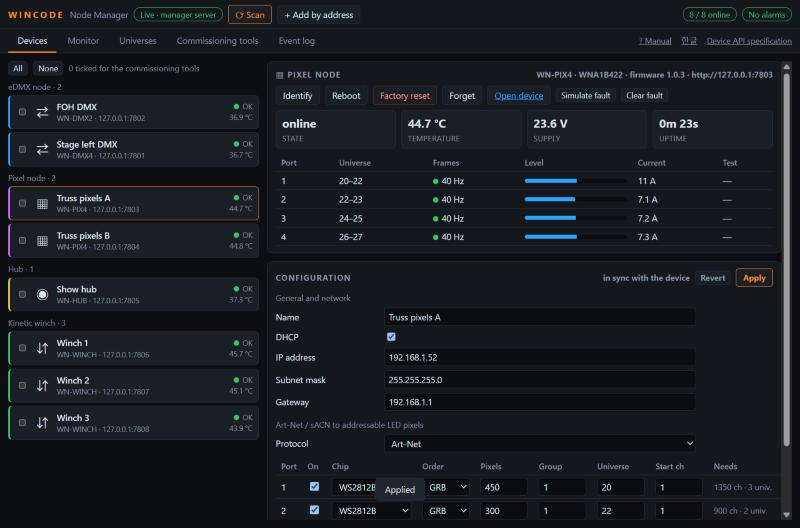
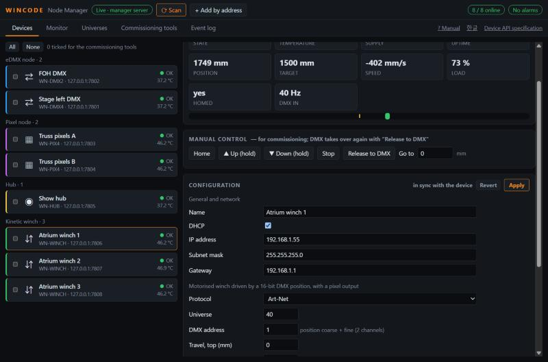
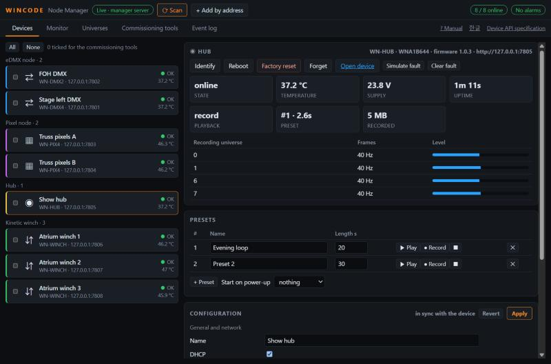
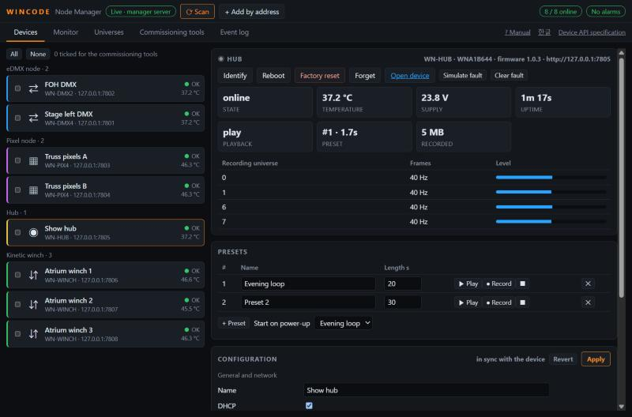
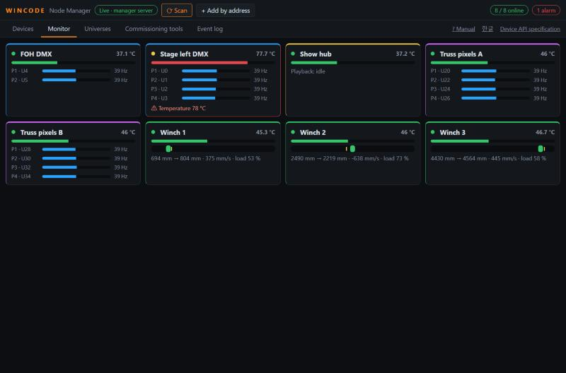
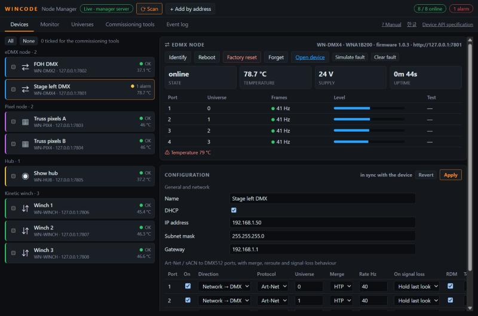
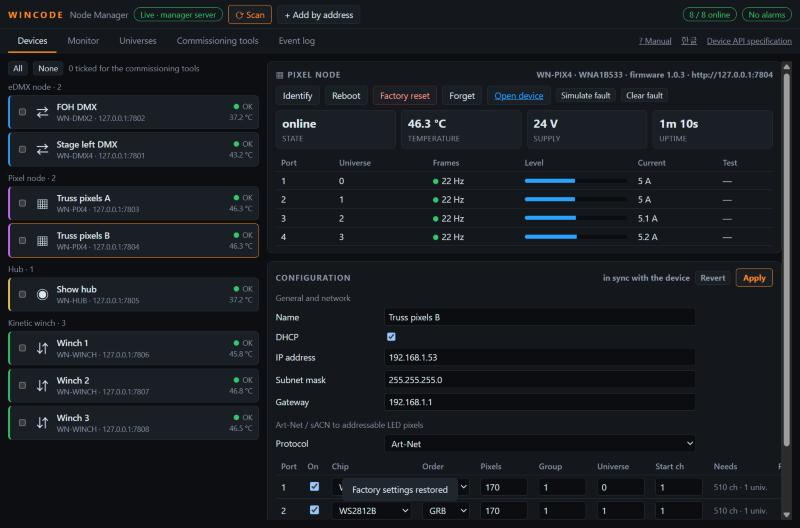

튜토리얼 Wincode Node Manager · 예제 리그로 직접 해 보며 배우기
튜토리얼 하나가 하나의 완결된 작업이며, 예제 리그에서 버튼 하나씩 따라 합니다. 예제 리그는 프로그램이 시작할 때 함께 뜨는 가상 장치 8대입니다. 튜토리얼 1~4는 실제 설치 현장의 하루처럼 이어지고, 5와 6은 언제든 따로 할 수 있습니다. 여기서 쓰는 모든 항목의 설명은 사용 설명서에 있습니다.
시작하기 전에
npm start로 프로그램을 시작하고 http://127.0.0.1:7760 을 엽니다. 표시가 Live · manager server여야 합니다. (온라인 데모로도 됩니다. 그때는 표시가 Demo입니다.)- 처음부터 다시 하려면 프로그램을 멈추고
npm start를 다시 실행합니다(데모에서는 페이지 새로 고침). 예제 리그가 처음 상태로 돌아갑니다. - 상자 안의 이름은 화면의 버튼입니다. 기울인 글자는 입력 항목이나 화면에 나오는 글입니다. 화면 글자는 영어이므로 영어 그대로 적었습니다.
- Configuration 상자의 변경은 Apply를 눌러야 전송됩니다. Commissioning tools의 버튼은 누르는 즉시 기록합니다.
예제 리그
| 장치 | 모델 | 처음 상태 |
|---|---|---|
| Stage left DMX | WN-DMX4 — DMX 포트 4개 | 유니버스 0–3 |
| FOH DMX | WN-DMX2 — DMX 포트 2개 | 유니버스 4–5 |
| Truss pixels A · B | WN-PIX4 — 각각 픽셀 포트 4개 | 포트당 300픽셀, 유니버스 20–27과 28–35 |
| Show hub | WN-HUB | 유니버스 0과 1을 녹화, 프리셋 2개 |
| Winch 1 · 2 · 3 | WN-WINCH | 위치는 유니버스 40의 주소 1, 5, 9. 픽셀은 유니버스 41–43 |
쇼를 보내는 콘솔이 없으므로, 가상 장치는 콘솔이 천천히 움직이는 값을 보내는 것처럼 동작합니다. 그래서 프레임률이 40 Hz로 나오고 윈치가 스스로 오르내립니다.
1. 리그 처음 둘러보기
할 일: 네트워크에 무엇이 있는지 보고, 장치의 상태를 읽고, 리그에서 장치 한 대를 찾아냅니다. 어느 현장에서든 처음 5분 동안 하는 일입니다.
- 상단 바 읽기. 오른쪽에 8 / 8 online과 No alarms가 있습니다. 이 두 표시가 리그 전체의 요약입니다. 둘 다 초록이면 손댈 일이 없습니다.
- Monitor 열기. 카드 8장이 나옵니다. eDMX와 픽셀 카드에는 포트마다 P1 · U20, 레벨 막대, 40 Hz가 한 줄씩 있습니다. 윈치 카드에서는 초록 표시가 막대 위를 움직입니다.
- 장치 하나 열기. "Truss pixels A" 카드를 클릭합니다. Devices 탭으로 넘어가 그 노드가 선택됩니다. 표에 포트 4개가 나오고, 포트 1은 유니버스 20–21을 수신합니다. 300픽셀에 900채널이 필요해서 유니버스가 2개입니다.
- 리그에서 찾기. Identify를 누릅니다. 버튼이 주황색으로 바뀌고 ◉ Identifying이라고 나옵니다. 실제 리그라면 지금 그 장치가 깜박입니다. 다시 눌러 멈춥니다.

Identify 중인 "Truss pixels A". 머리줄에 모델, ID, 펌웨어 버전, 주소가 나옵니다. - 전체 그림 보기. Universes를 엽니다. 제목 줄에 26 universes in use · 30 outputs라고 나옵니다. 이 목록이 콘솔이 이 리그로 보내야 하는 전부입니다.
- 로그 읽기. Event log를 엽니다. 장치마다 한 줄씩 Found … 8줄이 있고, 각 장치를 찾은 주소가 적혀 있습니다.
배운 것. 요약은 상단 바, 전체 현황은 Monitor, 장치 한 대는 Devices, 패치는 Universes, 지난 일은 Event log에서 봅니다.
2. 픽셀 트러스 세팅
할 일: 픽셀 노드 한 대를 설정하고, 두 번째 노드에 복사하고, 리그 전체에 유니버스 번호를 깔끔하게 매깁니다. 그 과정에서 번호 실수를 무대에 나가기 전에 찾아냅니다.
상황: 각 트러스의 포트 1에 달린 스트립이 계획보다 깁니다(300이 아니라 450픽셀). 전원 공급 장치는 예상보다 작아서 밝기를 80 %로 제한해야 합니다.
- Devices에서 "Truss pixels A"를 선택하고 Configuration까지 내려갑니다.
- 포트 1을 450픽셀로 바꾸기. 첫 줄의 Pixels에 450을 입력합니다. Needs가 900 ch · 2 univ.에서 1350 ch · 3 univ.로 바뀌고, 상자에 ● not applied가 뜹니다.
- 밝기 제한하기. 네 줄 모두 Limit %를 80으로 바꿉니다.
- Apply 누르기. 상자가 in sync with the device로 돌아갑니다. 상태 표의 포트 1이 이제 20–22입니다.

Apply 뒤: 포트 1이 유니버스 20–22를 씁니다. 그런데 포트 2는 여전히 22에서 시작합니다. - 실수 찾아내기. Universes를 엽니다. 유니버스 22가 두 번 나오고 shared by 2 outputs가 표시됩니다. 포트 1이 늘어나면서 포트 2가 쓰는 유니버스까지 넘어간 것입니다. 무대에서는 스트립 2의 앞부분이 스트립 1의 끝부분을 그대로 따라 하게 됩니다. 손으로 고치지 마십시오. 7단계에서 리그 전체를 한 번에 정리합니다.
- 노드 복사하기. Devices로 돌아가 "Truss pixels B"의 체크박스를 체크합니다. Commissioning tools를 엽니다. Copy a configuration에서 Truss pixels A (WN-PIX4)를 고르고 Copy to the ticked devices of the same model을 누릅니다. Truss pixels B는 포트 1이 450픽셀, 전체가 80 %가 되고, 이름과 주소는 자기 것을 그대로 유지합니다.

맨 윗줄에 1 ticked라고 나옵니다. 도구는 Truss pixels B에만 적용됩니다. - 유니버스 번호 매기기. Devices에서 None을 누릅니다. 아무것도 체크하지 않으면 도구가 모든 장치에 적용됩니다. Commissioning tools로 돌아가 Start at은 0, Protocol은 Art-Net으로 두고 Number in list order를 누릅니다.
- 결과 확인하기. Universes를 엽니다. 28 universes in use · 32 outputs이고 번호가 빈틈없이 이어집니다. FOH DMX가 0–1, Stage left DMX가 2–5, Truss pixels A가 6–14, Truss pixels B가 15–23, 윈치 램프가 24–26입니다.

번호를 매긴 뒤. 각 트러스의 포트 1은 pixels 1/3, 2/3, 3/3을 나릅니다. - 아직 공유되는 것 읽기. 유니버스 0과 1은 FOH DMX와 Show hub가 함께 씁니다. 허브가 녹화하는 것이므로 의도한 것입니다. 유니버스 40은 윈치 3대가 함께 씁니다. 같은 유니버스의 서로 다른 주소에서 위치를 읽으므로 이것도 의도한 것입니다. 그 밖에는 공유가 없습니다.
배운 것. 한 대를 세팅하고, 복사하고, 전체 번호를 한 번에 매깁니다. 겹침은 Universes 탭에 드러납니다. 픽셀 수를 바꿀 때마다 이 탭을 확인하십시오.
3. 윈치 커미셔닝
할 일: 윈치 3대에 이름을 붙이고, 이동 범위와 속도를 제한하고, 콘솔을 연결하기 전에 한 대를 수동으로 움직여 봅니다.
- Devices에서 윈치 3대를 체크합니다(Winch 1, 2, 3의 체크박스).
- 이름 붙이기. Commissioning tools의 Name the devices에서 Prefix에 Atrium winch를 입력하고 Rename을 누릅니다. 목록에 Atrium winch 1, 2, 3이 나옵니다.
- 체크 풀기. Devices로 돌아가 None을 누른 뒤 "Atrium winch 1"을 선택합니다.
- 주소 확인하기. 설정에 Universe 40, DMX address 1이 있습니다. 나머지 두 대는 같은 유니버스의 주소 5와 9입니다. 위치 하나가 2채널(coarse와 fine)을 쓰므로 서로 겹치지 않습니다. 콘솔 패치용으로 적어 둡니다.
- 이동 범위 제한하기. 아트리움 높이가 윈치 케이블 길이보다 낮습니다. Travel, bottom (mm)를 3000으로 바꿉니다. 이제 DMX 최댓값이 맨 위에서 3 m 아래를 뜻하고, 윈치는 그보다 더 내려가지 않습니다.
- 부드럽게 만들기. Maximum speed (mm/s)를 500, Acceleration (mm/s²)를 300으로 바꿉니다. Apply를 누릅니다.
- 홈 잡기. Manual control에서 Home을 누릅니다. Target이 0 mm가 되고 윈치가 올라가며 Homed가 yes로 바뀝니다. 이제부터 위치값을 믿을 수 있습니다.
- 높이 지정해서 보내기. Go to에 1500을 입력하고 Enter를 누릅니다. Target이 1500 mm가 되고 Position이 따라갑니다. 속도를 올리고, 500 mm/s를 넘지 않게 달리다가, 도착 전에 감속합니다. 막대에서는 초록 표시가 노란 선으로 이동합니다.

수동 제어로 1500 mm를 향해 가는 "Atrium winch 1". - 조그 버튼 써 보기. ▼ Down (hold)를 2초 동안 누르고 있다가 뗍니다. 윈치는 누르고 있는 동안에만 움직입니다. Stop은 어디에 있든 그 자리에 세웁니다.
- 콘솔에 돌려주기. Release to DMX를 누릅니다. 목표가 콘솔이 보내는 값으로 바뀌고 윈치가 다시 그것을 따릅니다.
- 윈치 2와 3에도 반복합니다. 더 빠른 방법: 두 대를 체크하고 Commissioning tools에서 "Atrium winch 1"의 설정을 복사합니다. 복사에는 주소도 따라가므로, 그 뒤 각자의 DMX address(5와 9)를 다시 넣어 줍니다.
Release to DMX를 잊지 마십시오. 수동으로 움직인 윈치는 수동 제어 상태로 남아, 풀어 주기 전까지 콘솔을 무시합니다. "윈치 한 대만 쇼를 안 따라온다"의 가장 흔한 원인입니다.
4. 콘솔 없는 쇼 — 허브
할 일: 허브에 무엇을 녹화할지 알려 주고, 프리셋을 녹화하고, 재생하고, 전원이 켜지면 스스로 시작하게 만듭니다. 사람 없이 돌아가는 설치 현장을 만드는 일입니다.
- Devices에서 "Show hub"를 선택합니다. 상태에 Playback: idle과, 수신 중인 유니버스(0과 1) 표가 40 Hz와 함께 나옵니다.
- 녹화 대상 고르기. 저녁 연출은 FOH 조명(유니버스 0과 1)과 첫 번째 트러스 스트립(6과 7)을 씁니다. Configuration에서 Record universes를
0, 1, 6, 7로 바꿉니다. - 프리셋 이름 붙이기. Presets에서 프리셋 1의 이름을 Evening loop, Length s를 20으로 바꿉니다.
- Apply 누르기. 상태 표에 유니버스 4개가 나오고 모두 수신 중입니다.
- 녹화하기. 실제 작업이라면 지금 콘솔에서 큐를 시작합니다. Evening loop 줄의 ● Record를 누릅니다. Playback이 record가 되고 Preset에서 초가 올라갑니다.

유니버스 0, 1, 6, 7에서 프리셋 1을 녹화하는 중. - 멈추기. 20초쯤 지나면 ■를 누릅니다. Playback이 idle로 돌아갑니다.
- 재생하기. 같은 줄의 ▶ Play를 누릅니다. Playback이 play가 되고, 초가 20까지 올라갔다가 다시 시작합니다. 프리셋은 멈출 때까지 반복됩니다.
- 스스로 시작하게 하기. 프리셋 표 아래의 Start on power-up을 Evening loop로 바꾸고 Apply를 누릅니다. 허브 전원이 켜질 때마다 아무도 손대지 않아도 그 프리셋이 시작됩니다.

Evening loop 재생 중. 전원 투입 시 프리셋으로도 지정되어 있습니다. - 누름 버튼 연결하기. Configuration 맨 아래 Trigger inputs에서 Input 1 starts → Evening loop, Input 2 starts → Preset 2로 둡니다. 입력 2에 연결한 벽 버튼으로 두 번째 연출로 넘어갈 수 있습니다. Apply를 누릅니다.
- 지도에서 확인하기. Universes를 엽니다. 허브가 유니버스 0, 1, 6, 7에 recording input으로 나오고, 같은 유니버스를 내보내는 출력 옆에 놓입니다.
가상 허브는 프리셋의 이름과 길이를 보관하고 상태를 보고하지만, 실제 DMX 프레임을 저장하거나 내보내지는 않습니다. 그것은 하드웨어의 몫입니다. 여기서 설정한 내용이 실제 허브에 그대로 전달될 내용입니다.
5. 쇼 중 고장 찾기
할 일: 장치가 과열되는 것을 보고, 몇 초 만에 찾아내고, 나중에 무슨 일이 있었는지 읽습니다. 쇼 당일 리그를 지켜보는 사람이 하는 일입니다.
- 고장 일으키기. Devices에서 "Stage left DMX"를 선택하고 Simulate fault를 누릅니다(이 버튼은 가상 장치에만 있습니다). 온도가 오르기 시작합니다.
- Monitor에서 지켜보기. Monitor를 열고 20초쯤 기다립니다. "Stage left DMX"의 온도 막대가 60 °C를 넘으면 노랑, 75 °C를 넘으면 빨강이 됩니다. 이어서 카드에 빨간 테두리와 ⚠ Temperature 78 °C 줄이 생기고, 상단 바가 1 alarm으로 바뀝니다.

카드 8장 중 한 장이 빨갛습니다. 어느 장치인지 한눈에 보입니다. - 장치로 가기. 빨간 카드를 클릭합니다. Devices에서 "Stage left DMX"가 선택됩니다. 목록의 그 줄에 노란 점과 1 alarm이 있고, 포트 표 아래에 알람이 빨간 글씨로 적혀 있습니다. 포트 4개가 여전히 40 Hz인 점을 보십시오. 뜨겁지만 쇼 데이터는 계속 전달하고 있습니다.

알람의 주인공: 뜨겁지만 수신과 송신은 계속하고 있습니다. - 고장 끝내기. Clear fault를 누릅니다. 온도가 내려가고, 75 °C 아래가 되면 알람이 스스로 사라지며 상단 바가 No alarms로 돌아갑니다.
- 장치 잃어 보기. "FOH DMX"를 선택하고 Reboot를 누릅니다. 응답이 없는 채로 3초쯤 지나면 그 줄이 회색으로 변하고 빨간 점이 붙으며 상단 바가 7 / 8 online이 됩니다. 몇 초 뒤 장치가 돌아옵니다.
- 기록 읽기. Event log를 엽니다. 최신순으로 FOH DMX is back online, FOH DMX is offline, Stage left DMX: alarms cleared, Stage left DMX: Temperature 75 °C가 각각 시각과 함께 있습니다.

로그는 아무도 보고 있지 않을 때 일어난 일도 남깁니다.
배운 것. 쇼 중에는 Monitor를 열어 두고 상단 바의 두 표시를 봅니다. 알람은 "이 장치를 보라"는 뜻이고, 오프라인은 "이 장치가 사라졌다"는 뜻입니다. 언제 일어났는지, 전에도 있었는지는 로그가 알려 줍니다.
6. 백업, 그리고 장치 되돌리기
할 일: 리그 전체의 설정을 저장하고, 장치 한 대의 설정을 잃었다가, 파일 하나로 되찾습니다.
- 백업 받기. Devices에서 None을 누릅니다(체크 없음 = 모든 장치). Commissioning tools에서 Download backup을 누릅니다. 브라우저가
wincode-nodes-날짜.json을 저장합니다. 로그에 Backup of 8 devices downloaded가 남습니다. - "Truss pixels B" 살펴보기. Devices에서 선택하고 포트를 확인합니다. 각 300픽셀, 유니버스 28, 30, 32, 34입니다(튜토리얼 2를 했다면 거기서 남긴 값).
- 설정 잃기. Factory reset을 누르고 확인합니다. 포트가 기본값으로 돌아갑니다: 170픽셀, 유니버스 0, 1, 2, 3. 이름과 IP 주소는 유지됩니다. 그래서 장치가 여전히 목록에 있고 연결도 됩니다.

Factory reset 뒤: 포트는 기본값이지만 이름과 주소는 그대로입니다. - 피해 확인하기. Universes를 엽니다. 유니버스 0–3을 이제 픽셀 노드와 DMX 노드가 함께 씁니다. 누군가 "리셋만 눌렀을 뿐"인 리그가 이런 모습입니다.
- 복원하기. Commissioning tools에서 Restore from a backup…을 누르고 1단계의 파일을 고릅니다. Restored 8 devices라는 메시지가 나옵니다.

백업은 네트워크에서 찾은 모든 장치에 다시 기록됩니다. - 확인하기. "Truss pixels B"를 다시 선택합니다. 300픽셀, 유니버스 28, 30, 32, 34입니다. 잠깐 No data on universe 28이 뜰 수 있습니다. 그 유니버스를 막 다시 수신하기 시작했기 때문이며 알람은 스스로 사라집니다.
고장 난 장치를 교체할 때. 백업은 장치 ID로 맞추는데, 교체한 장치는 ID가 새것이므로 Restore가 건너뛰고 1 not on the network라고 알려 줍니다. 교체 장치는 같은 모델의 다른 장치에서 Copy a configuration으로 복사한 뒤 유니버스를 설정합니다. 백업 파일을 열어 값을 참고해도 됩니다.
다음 단계
- 사용 설명서에 모든 장치 종류의 모든 항목이 설명되어 있습니다.
- 같은 컴퓨터에서 콘솔이나 DMX 프로그램으로 유니버스 40에 Art-Net을 보내 보십시오. 가상 윈치가 자기 움직임 대신 페이더를 따릅니다(설명서 16장).
- 펌웨어를 작성한다면 장치 API 규격서(영문)에 이 튜토리얼이 장치에 한 일이 정확히 적혀 있습니다.